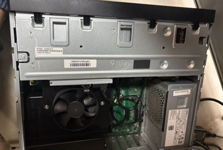
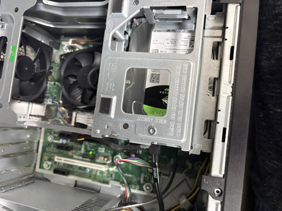
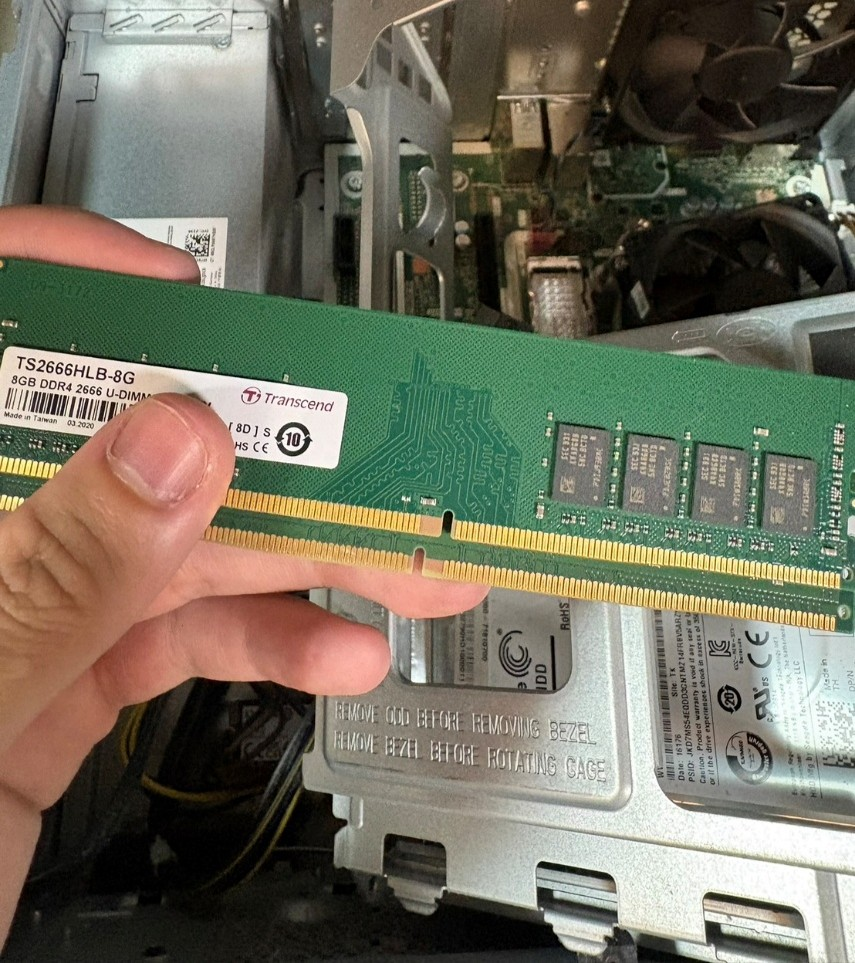
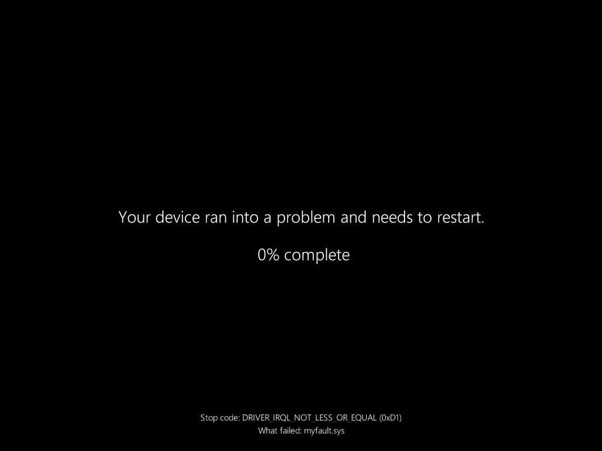

林君輔
① 實習初期
主要熟悉「報修管理中心」的操作規範與維護 SOP。此階段的進度重點在於建立標準化的維修思維。
- 硬體維護基礎：學習執行筆記型電腦與桌上型主機的硬體擴充，包含記憶體安裝，並確認硬體在 BIOS 中正確識別。
- 磁碟管理實作：學習使用「磁碟管理」工具進行磁碟分割區規劃。
② Windows 11 升級與日常報修
隨著對環境的熟悉，我開始負責部分的 Windows 11 升級任務，並處理一些簡單的報修單。

- 大規模升級執行：參與公司內部的 Windows 11升級並處理更新錯誤。
- 自動化部署實務：學習利用 Acronis進行快速復原，在更換 SSD 或處理舊機重灌。


③ 進階日誌分析與系統標準化建議
在有了眾多案例後，我開始嘗試製作標準化的SOP或是提出更好的解決方式來讓其他人能更好的去執行這項專案。
- 舊機重灌 SOP 優化：總結實習期間的經驗，協助建立一套針對舊型設備的「標準化重灌流程」，從資料備份、BIOS 校調到系統校驗，確保每一台都可以完整地完成。

④ 各機型電腦的記憶體擴充或報修
在報修過程中，我也碰到了我平常不常見的電腦機型 :輕量級主機


-
系統部署與底層韌體管理 在 BIOS 中配置 TPM 2.0、Secure Boot 以符合 Windows 11 限制，並監控 CPU 溫度與風扇轉速。
在執行 Windows 11 遷移專案中，我學會了如何從硬體層面確保系統的穩定性與安全性：
- UEFI 與安全啟動配置：學習在 BIOS 中正確配置 TPM 2.0、Secure Boot ，這是確保設備符合 Windows 11 硬體限制的關鍵。
- 硬體監控意識：學會透過 BIOS 監控 CPU 溫度與風扇轉速，確保設備在執行高負載的系統升級或大規模數據備份前，處於健康的硬體狀態。
-
系統診斷與修復指令 熟練 sfc /scannow 與 DISM 修復指令，並透過事件檢視器與藍屏代碼分析找出故障源頭。
面對 IT 維運中的各種「疑難雜症」，我學會了如何進行精準診斷：
- 核心修復指令：熟練運用
sfc /scannow進行系統檔案完整性檢查，並學習使用 DISM 工具修復損壞的系統映像檔。 - 日誌驅動的排錯思維：學會利用「事件檢視器 (Event Viewer)」分析系統重大錯誤，如 Kernel-Power (ID 41) 代表的異常重啟，或 volmgr 涉及的磁碟子系統問題，從而判斷故障源頭。藍屏死機 (BSOD) 分析： 學習解讀如 IRQL_NOT_LESS_OR_EQUAL 的崩潰代碼，判斷其是否與驅動程式不相容或硬體故障相關，提升了排錯的效率。
- 核心修復指令：熟練運用
-
磁碟管理與拆機維護技術 更換硬體前先確認設備狀態，安裝後確認系統正確讀取新安裝的 NVMe SSD。
在進行任何硬體更換前，必須先確認設備狀態。安裝完後同時確認系統是否正確讀取到新安裝的 NVMe SSD（如 INTEL SSDPEKNU512GZ），確保物理安裝無誤。

-
處理當機問題 認識新版當機畫面（不再是藍底）所顯示的文字與錯誤代碼。
新版當機畫面捨棄原本的藍色背景，僅顯示「Your device ran into a problem and needs to restart(你的裝置發生問題，需要重新啟動)」的文字並且附上錯誤代碼,其中我最常遇到的就是

IT 維運與產品部署者：在 Windows 11 大規模升級專案中，我負責確保每一台交付給使用者的設備都處於最佳狀態以及解決各部門的報修。
-
剛進公司的震撼教育：不是只有修電腦而已 不只是換零件、重灌系統，系統一出問題第一時間就是找我們，也學到教科書上沒寫的應變能力。
剛進精藤實習時，我被分配到報修管理中心。本來以為 IT 維運就是換換零件、重灌系統，但實際接觸後才發現只要系統出問題，第一時間就是找我們 。而在此期間我也學到了很多「教科書上沒寫」的應變能力 。
-
Windows 11 升級 升級前必須先確認系統規格與磁碟空間，並檢查「未知帳戶」的機碼是否干預更新。
這陣子我最主要的任務就是處理公司的大規模 Win11 升級 。以前自己組電腦可能覺得 BIOS 隨便設就好，反正很容易升上去，但後來發現公司設備不是每台都像家用電腦一樣新，要升級 Win11必須先確保系統規格以及磁碟空間並且檢查有沒有”未知帳戶”的機碼在干預更新，確認這些底層設定都到位，否則系統升級到一半就會報錯。
-
舊機重灌與環境標準化 C 槽與 D 槽的比例要先分配好，並學會用 Acronis 快速部署環境、用 Treesize 檢視資料。
公司有很多汰換下來或效能變差的舊機或是離職人員的舊機，我們必須把它們重灌再分發。其中C 槽跟 D 槽的比例要分好，以免在未來發生C槽空間不足的問題，這跟 Win11 的引導穩定性很有關係。在學習的過程成中我也認識了很多好用的工具像是 Acronis，只要選好目標硬碟，短時間內就能把整套公司專用的環境（含軟體和驅動）弄好以及用來檢視資料的Treesize這在實習前我完全沒接觸過。
-
解決問題能力 遇到更新錯誤代碼、事件檢視器錯誤與藍屏時，先分析原因再處理，而不是直接重灌。
遇到 Windows Update 錯誤怎麼辦？
升級時最常遇到像 0x8024500c 的錯誤代碼。以前遇到這種紅字可能就直接找店家重灌了，但現在我需要先嘗試找出問題所在。這通常是更新服務或網路連線有問題，我會先嘗試重設 Windows Update 。
事件檢視器分析
當員工說「電腦會自動重開機」或「怪怪的」時，之前可能只能上網查看看但又不知道自己電腦到底是甚麼問題，但現在知道我可以打開事件檢視器去找到錯誤。
- 追蹤 Kernel-Power：看到 ID 41 的紅色驚嘆號，我就知道是異常斷電。
- 分析 volmgr 錯誤：看到 volmgr 報錯，這往往代表磁碟子系統有問題。
藍屏處理
以前只覺得藍屏很恐怖，完全不知道這是甚麼意思，但現在我會去看它的 Stop Code。例如 IRQL_NOT_LESS_OR_EQUAL 往往跟記憶體或驅動程式有關。如果是加裝記憶體後才出現，我會先拔掉重新清理金手指，或交叉測試是不是插槽有問題。
-
專業心態的轉變 從遇到 Bug 就焦慮、立刻求助，轉為先冷靜分析、截圖查資料，真的遇到瓶頸才請教前輩。
在精藤實習的這幾個月，是我從校園走向職場、在專業心態上產生巨大轉變的關鍵期。剛進入實習時，面對日常大量的硬體拆裝維護以及 Windows 11 系統升級與報修案件，過去在課本上學到的理論往往難以立刻對應到複雜的實務現場。以前在學校寫作業或做專案時，遇到 Bug 或系統異常，往往會陷入焦慮、不知所措，甚至習慣性地想立刻向他人尋求解答。
然而，這幾個月的洗禮徹底改變了我的工程師思維。我學到最寶貴的不是某個特定的指令，而是「獨立除錯與結構化思考」的能力。現在每當遇到棘手的系統問題時，我不再慌張，而是建立起一套專業的處理流程：先冷靜地分析問題、詳盡地擷取錯誤畫面、主動上網查閱官方文件與社群技術資料。 只有當自己嘗試了所有可行方案、真的遇到技術瓶頸時，我才會去請教資深前輩。
實習期間也讓我對「系統維管」有了更宏觀的認識。系統維護絕對不是被動地等設備壞掉再去修，而是一項需要預防性規劃與跨部門協調的治理工作。這是一份非常適合「喜歡享受解決問題後帶來成就感」的人會感興趣的工作。每一次將癱瘓的系統回復正常、每一次順利找出隱藏的 Bug，那種排除萬難後的踏實感，就是推動我持續在 IT 領域深耕、精進技術的最強大動力。